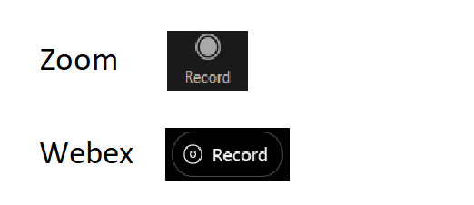

Challenge #2: Remote Communications
Team: Nastasă Raluca, Popa Bianca, Vlaiduc Mihnea
The remote communication applications we will discuss are Zoom and Microsoft Teams
I. Affordances, visual variables, interaction flow
WEBEX
USE CASE:
- Workshop
- Online class
INTERACTION FLOW:
- Acces through link, enter name, connect via button, waiting list, access to meeting with other participants
- On/off mic, on/off camera, chat button (to a specific person / everyone), share screen button, recording button, raise hand, reactions, auxiliary meeting options, leave / end (host) meeting button, applications button, participants button.
Affordances & Visual variables:
- Explicit affordances
- Join as a guest button to connect to the meeting: white color on black background, creating contrast for visibility, central position, rounded edges.
- Sign in button, for account access: not highlighted, caused by color and lack of shape.
- A preview of the meeting access:
- Mic on/off and camera on/off button: appropriate size, positioned at the bottom left, side by side
- Join meeting button: highlighted with green color, positioned at the bottom right.
- Waiting room for meeting access:
- Availability of mute/unmute microphone, turn on/off camera button.
- Leave meeting button: red color, round shape, intuitive design.
- Meeting window, at the bottom, we have a series of buttons available:
- Mute/unmute microphone button: same design as mentioned above.
- Turn on/off camera button: same design as mentioned above.
- Share screen button: round shape, intuitive design.
- Record meeting button: same pattern as the Share screen button.
- Raise hand & reactions button: oval shape, intuitive design.
- Leave meeting button: same design as mentioned above.
- Auxiliary meeting options button: round shape, intuitive design.
- Applications button: round shape, non-intuitive design.
- Participants button: round shape, intuitive design, opens a window on the right side where we can see the participants present in the meeting and can mute/unmute our microphone
- Chat button: round shape, intuitive design, opens a window on the right side where we can send messages to a specific person or to all participants
- Q&A and Notes options button: hard to notice.
- Layout button: located in the upper-right corner, allows for selecting the screen view mode.

-
Hidden affordances:
- Meeting info button: located in the top left corner, difficult to notice, contains information about the meeting and allows copying the link for accessing the meeting.
- Show/Hide menu bar button: located in the top left corner, contains the options presented above plus additional settings (some options in the menu could have been turned into buttons for easier access, e.g., Breakout Sessions).
ZOOM
USE CASE:
- Academic presentation
INTERACTION FLOW:
- Access through a link, waiting list, access to the meeting with other participants.
- Waiting room: on/off mic, on/off camera button.
- On/off mic, on/off camera, chat button (to a specific person / everyone), share screen button, meeting recording button, reactions button, leave/end (host) meeting button, applications button, participants button, security button (host only), whiteboard button.
Affordances & Visual variables:
- Explicit affordances
- Waiting room before entering the meeting: displays a small window in the top left corner containing two buttons, not very visible due to the small size.
- Meeting window, at the bottom, we have a series of buttons:
- Mute/Unmute microphone and Turn on/off camera buttons: intuitive design, positioned bottom left, next to each other.
- Security button (host only).
- Breakout Sessions option hard to find.
- Participants button: intuitive design, opens a window on the right side where we can see the participants present in the meeting and we can turn on/off the microphone.
- Chat button: intuitive design, opens a window on the right side where we can send messages in chat to a specific person or to all participants, and we benefit from writing options, attaching screenshots, files.
- Share screen button: intuitive design.
- Recording meeting button: same pattern as Share screen button.
- Reactions button: intuitive design, wide availability of emojis, also includes the option to raise hand.
- Applications button: unintuitive icon, but specific label specified.
- Whiteboard button (host only): intuitive design, opens a window where a board can be accessed where all meeting participants can write.
- Leave/End button: rectangular shape, rounded edges, color, positioned bottom right, easy to spot.
- View button: positioned top right, can select the screen view mode.
- Hidden Affordances
- Meeting info button: located in the top-left corner, hard to notice, contains information about the meeting and allows for copying the link to access the meeting.
II. Visual metaphors & Idioms
- Mute/Unmute
- Both applications present metaphorical icons, suggesting a microphone; the design is similar, with the differences being:
- Webex uses green for the turned-on microphone and red for the turned-off one, while Zoom marks the muted microphone with a red line cutting through it.
- Zoom presents larger and more visible icons.
- For text-only interaction, this button is not necessary.
- Stop/Start video
- Both applications feature metaphorical icons, suggesting a video camera; the design is similar, with the differences being:
- Webex uses green color for the camera on and red color for off, while Zoom marks the camera off with just a red line cutting through the camera.
- Zoom features larger and more visible icons.
- For text-only interaction: this button is not necessary.
- Share screen
- Both applications present idiomatic icons, featuring an arrow pointing upwards, framed in a rectangular box; the design is similar, with the differences being:
- Zoom marks the icon in green color, while Webex does not use any color.
- The label in Zoom is more suggestive ("Share screen") than the one in Webex ("Share").
- For text-only interaction: a button that reads "Share screen" should be provided, which offers the possibility to display another text-based application."
- Chat
- Both applications present idiomatic icons with similar designs, the difference being that Zoom's icon is larger than Webex's.
- For text-only interaction: a button with the command "open chat" to access the messaging feature.
- Participants
- Both applications feature metaphorical icons depicting silhouettes of people, with slightly different designs, with the difference being that Zoom displays the number of participants present in the meeting.
- For text-only interaction: the command for the option to view participants ("show participants").
- Reactions & Raise Hand
- Both applications have metaphorical icons, showing a smiling face for "Reactions" and a raised hand for "Raise Hand," with identical designs. The differences are:
- Zoom has the "Raise Hand" option incorporated into "Reactions," which makes it difficult for the participant to find, as it is not easily visible. Webex has the two options side by side.
- Zoom displays the labels of the two buttons ("Reactions" & "Raise Hand"), whereas Webex does not include any labels.
- For text-only interaction: Two commands for reactions and raising hand ("insert reaction: smile", "raise hand").

- Applications
- Both applications display idiomatic icons, with different and difficult to intuit designs, but both Zoom and Webex display labels to help the user understand the button's functionality.
- For text-only interaction: command to start another application ("start app: Notepad").
- View screen
- Both applications present idiomatic icons, with slightly different designs, representing a grid, the difference between the two being the fact that the labels are different: Zoom - "View", Webex - "Layout" (more descriptive).
- For text-only interaction: command to modify the screen layout ("change layout: columns").
- Close meeting
- Zoom has no icon, the button displays the text "End/Leave" in white on a red background, in a rectangle.
- Webex has a symbolic icon, representing an "X" in a red circle, easy to understand.
- Differences: Zoom's button is larger and easier to see.
- For text-only interaction: command to close the meeting ("end meeting" / "leave meeting" - depending on the user type, host or participant).
- Record meeting
- Both applications have similarly designed language icons, with the difference being that Zoom's icon is larger than Webex's.
- For text-only interaction: command for saving messages ("save session").

- Meeting information
- Both applications have similarly designed language icons, with the differences being:
- Webex displays the label for the icon ("Meeting Info"), while Zoom does not display it, making it difficult for the user.
- Zoom has a larger, more noticeable green icon, while Webex has a blue icon.
- For text-only interaction: command for displaying meeting information ("show meeting info").
III. Cognitive overload
Both Webex and Zoom can cause cognitive overload in special conditions or contexts, although the extent to which this occurs
can vary depending on several factors, such as the specific features being used, the number of participants, and the purpose
of the meeting.
-
For example, in large meetings or presentations, where there are many participants and the presenter is sharing a lot of
information, participants may experience cognitive overload as they try to process and retain all the information being
presented. This can be exacerbated if the presenter is using multiple features, such as screen sharing, video, and chat,
all at the same time.
In addition, certain features, such as breakout rooms or polling, can also add to cognitive load if they are not used
appropriately or if participants are not familiar with how to use them. For example, if participants are asked to move
in and out of breakout rooms frequently, or if the instructions for using a polling feature are unclear, this can cause
confusion and cognitive overload.
- Technical difficulties: Technical difficulties such as poor internet connection, audio problems, and video lag can cause
cognitive overload by disrupting the flow of the meeting and requiring additional mental effort to resolve. This can lead to
frustration and cognitive overload, as participants try to process the information while dealing with technical challenges.
- When multiple participants are sharing their screens at the same time (Zoom) it can be difficult to keep track of everyone
and the information being shared. This can lead to cognitive overload, especially if participants are trying to follow multiple
conversations or presentations simultaneously. Keeping track of all this information can be challenging, especially if the meeting
is fast-paced or if there are distractions in the environment.
- Lack of structure: When meetings lack structure or a clear agenda, it can be difficult to follow the discussion and keep track
of important information. This can lead to cognitive overload, especially if participants are not sure what is expected of them or
if the meeting is disorganized.
IV. Improvements
ZOOM
- For the web platform:
- UI/UX problem: Difficulty finding and joining meetings, especially if users are not familiar with the platform.
Solution: Provide options for users to adjust the size of the video and content windows to fit their screen size and preferences.
Also, consider providing a feature that automatically adjusts the window size based on the number of participants or the type of
content being shared.
- UI/UX problem: Difficulty managing multiple meetings or accounts.
Solution: Provide a clear and intuitive dashboard or workspace for users to manage multiple meetings or accounts. Allow users to
switch between accounts or meetings easily and provide clear indications of which account or meeting they are currently using.
- For the mobile platform:
- UI/UX problem: Limited screen space on mobile devices can make it difficult to view all meeting participants or share content effectively.
Solution: Provide options for users to adjust the size of the video and content windows to fit their screen size and preferences.
Also, consider providing a feature that automatically adjusts the window size based on the number of participants or the type of
content being shared.
- UI/UX problem: Difficulty finding and joining meetings on mobile devices, especially if users are not familiar with the platform.
Solution: Provide clear and prominent links or buttons to join meetings on the Zoom mobile app homepage. Additionally, allow users
to save frequently used meeting IDs or links for easy access.
- UI/UX problem: Limited control options on mobile devices can make it difficult for users to manage meetings effectively.
Solution: Provide more control options for users on mobile devices, such as the ability to mute or unmute participants, manage
screen sharing, and access advanced settings. Also, consider providing a feature that allows users to easily switch between video
and audio-only modes to conserve bandwidth and improve performance.
WEBEX
- For the web platform:
- UI/UX problem: Cluttered interface during meetings, with too many buttons and controls, can make it difficult for users to find what they need and can be overwhelming.
Solution: Simplify the interface by reducing the number of buttons and controls displayed during a meeting. Group similar functions together and use clear and intuitive icons and labels to make it easier for users to navigate the interface. Also,
provide users with the ability to customize the interface to their preferences.
- UI/UX problem: Difficulty sharing and presenting content during a meeting, especially when using different file formats or when working with external applications.
Solution: Provide a more streamlined and intuitive process for sharing and presenting content during a meeting. Allow users to
easily upload and share files from their computer or cloud storage, and provide options for converting files to a format that is
compatible with Webex. Additionally, integrate with popular external applications and tools to make it easier for users to share
content from those sources.
- UI/UX problem: Limited engagement options can make meetings feel static and unengaging, leading to decreased participation and effectiveness.
Solution: Provide more engaging options for users to interact during a meeting, such as virtual whiteboards, polls, breakout
rooms, and virtual backgrounds. These features can help increase engagement and participation, making the meeting more effective
and productive. Additionally, allow users to customize their engagement options and choose the ones that best fit their meeting
goals and preferences.
- For the mobile platform:
- UI/UX problem: Limited screen space on mobile devices can make it difficult to view all meeting participants or share content effectively.
Solution: Provide options for users to adjust the size of the video and content windows to fit their screen size and preferences.
Also, consider providing a feature that automatically adjusts the window size based on the number of participants or the type of
content being shared.
- UI/UX problem: Difficulty finding and joining meetings on mobile devices, especially if users are not familiar with the platform.
Solution: Provide clear and prominent links or buttons to join meetings on the Webex mobile app homepage. Additionally, allow
users to save frequently used meeting IDs or links for easy access.
- UI/UX problem: Limited control options on mobile devices can make it difficult for users to manage meetings effectively.
Solution: Provide more control options for users on mobile devices, such as the ability to mute or unmute participants,
manage screen sharing, and access advanced settings. Also, consider providing a feature that allows users to easily switch
between video and audio-only modes to conserve bandwidth and improve performance.
V. Empiric laws
The empiric laws of Fitts', Hick's, and steering can also be applied in the context of Zoom and Webex to optimize human
performance and efficiency during video conferencing. Here are some ways to apply these laws in Zoom and Webex:
-
Fitts' law: In Zoom and Webex, Fitts' law can be applied to predict the time required to select buttons or options within the
platform. For example, the distance and size of buttons and menus on the user interface can impact the efficiency and ease of
use of the platform. To optimize performance, designers can use Fitts' law to ensure that buttons and menus are appropriately
sized and spaced, and that the most frequently used options are easily accessible.
- For Webex, the "Share screen" button can be customized to stand out, just like it is in Zoom.
- For Zoom, the "Chat" and "Participants" buttons should be moved to the bottom right, as it is in Webex, because windows would open above them and it would be much easier to navigate the application.
-
Hick's law: Hick's law can be applied in Zoom and Webex to reduce the cognitive load associated with decision-making during
video conferencing. For example, during a meeting, participants may be presented with multiple options for participation, such
as using video or audio only, using the chat feature, or raising their hand to ask a question. To reduce decision-making time
and cognitive load, designers can streamline the options and prioritize the most commonly used ones.
- On Webex, the "Raise hand" button could be incorporated into the "Reactions" button, just like it is in Zoom.
-
Steering law: Steering law can be applied in Zoom and Webex to optimize the time required to navigate within the platform. For
example, during a meeting, participants may need to switch between video feeds or share their screen. To optimize the time
required to steer between these options, designers can ensure that navigation options are appropriately sized and spaced, and
that participants can easily switch between options without unnecessary steps.
VI. New features
- Zoom: adding a preview window before entering a meeting, from where you can turn on/off the microphone and turn on/off the video camera, with the ability to see what the camera is showing. Additionally, there should be a "Join" button, so that the user can enter the meeting when ready and not be directly connected.
- AI-powered virtual background blur:
As more people work and attend meetings remotely, there is a growing need for privacy and reducing distractions.
Zoom or Webex could add an AI-powered virtual background blur feature that would intelligently detect the user's background and
blur it out while keeping the user in focus. This feature can be especially helpful for people who work in busy or noisy
environments, or in situations where they can't control the background.
- The ability to create an avatar to be used when the camera is on, to make meetings more flexible and informal. This would be useful when the user wants to eat, hasn't had time to get ready, and may not want to be seen by other participants, but still wants to show that they are present in the meeting. Another reason is that an avatar is more interactive than a simple static profile picture.